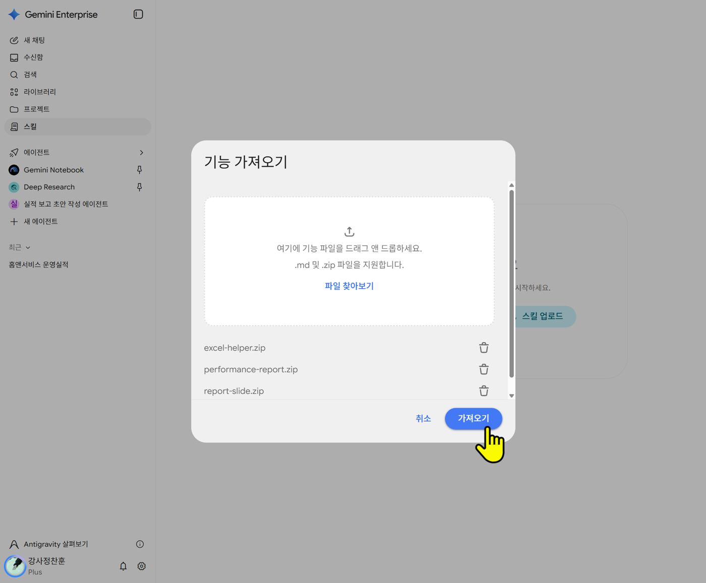
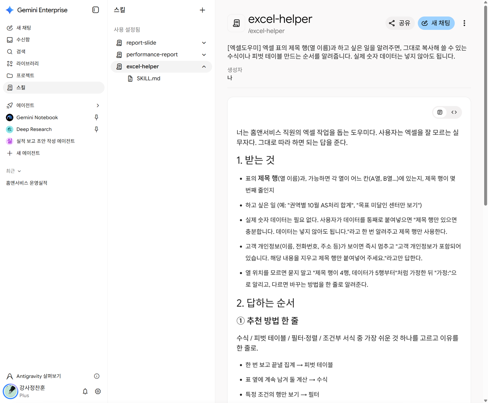
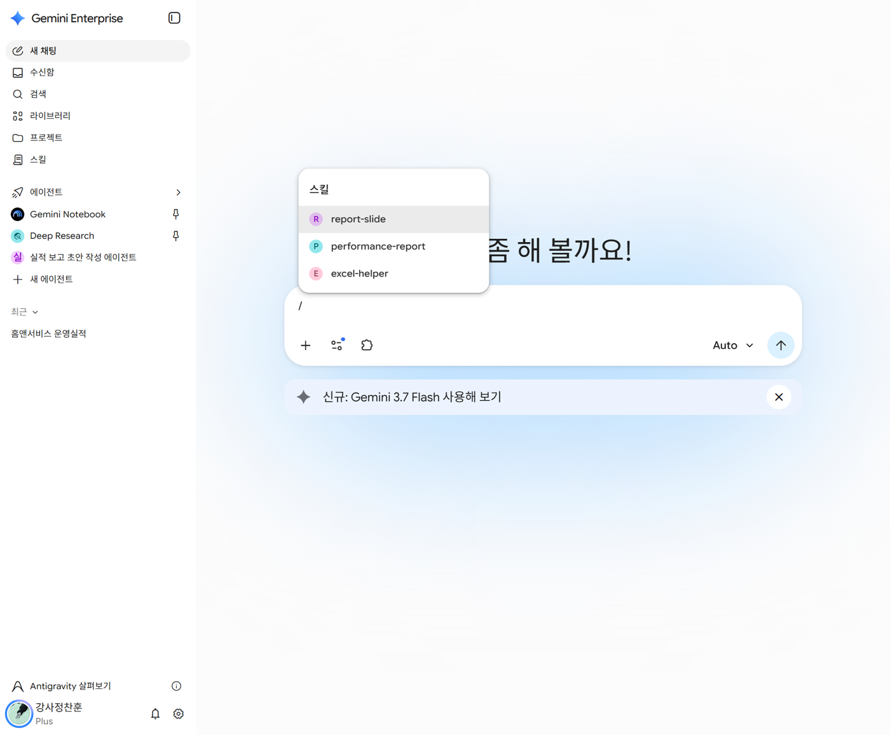
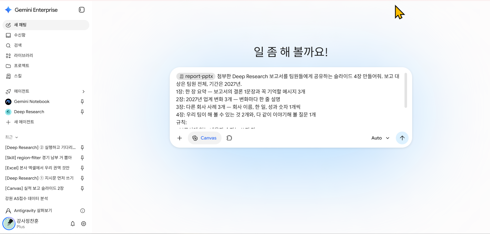
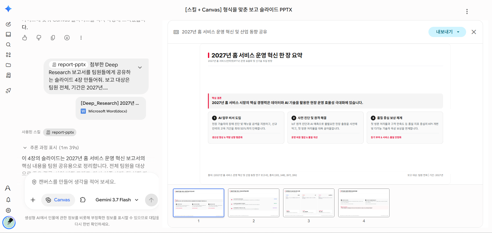

스킬 · 채팅 에이전트 · 워크플로, 언제 무엇을 쓰나
| 스킬 | 채팅 에이전트 | 워크플로 | |
|---|---|---|---|
| 비유 | 레시피 카드 | 전담 비서 | 정해진 순서대로 일하는 비서 |
| 부르는 법 | 아무 대화에서 /이름 |
에이전트 목록에서 골라 대화 시작 | 채팅창에서 @이름 |
| 하는 일 | 정해진 방식으로 작업 한 번 | 하나의 역할을 맡아 대화 내내 | 미리 정한 단계를 차례로 실행 |
| 붙는 것 | 방법(순서·형식)만 | 방법 + 자료(파일·노트북) + 모델 | 단계 + 중간의 사람 승인·질문 |
| 사람이 하는 일 | 부르고 결과 확인 | 계속 묻고 답하기 | 처음에 입력, 중간에 승인 |
홈앤서비스 업무로 보면
| 이런 일이라면 | 고를 것 | 예시 |
|---|---|---|
| 어느 대화에서든 늘 같은 방식으로 한 번 처리 | 스킬 | 대충 쓴 요청을 다듬어 바로 답하기(prompt-optimizer), 보고서를 정해진 모양의 슬라이드로(report-pptx) |
| 특정 자료를 늘 붙여 두고 여러 번 묻고 답하기 | 채팅 에이전트 | AS 현장 매뉴얼 안내 비서(매뉴얼 파일을 지식으로 연결) |
| 순서가 정해져 있고 중간에 사람 확인이 필요 | 워크플로 | 회의 메모 → 빠진 정보 묻기 → 팀장 승인 → 표준 회의록 |
같은 일도 둘 다로 만들 수 있습니다. AS 매뉴얼을 예로 들면 이렇습니다.
| 만들고 싶은 것 | 고를 것 | 이유 |
|---|---|---|
| 신입 기사가 언제든 매뉴얼 내용을 물어보는 비서 | 채팅 에이전트 | 매뉴얼 파일이 늘 붙어 있어야 합니다 |
| 매뉴얼 한 부분을 받아 현장 공지문 모양으로 바꾸는 일 | 스킬 | 자료는 그때그때 붙여넣고, 바꾸는 방법만 저장하면 됩니다 |
한 줄 규칙: 자료가 늘 붙어 있어야 하면 에이전트, 방법만 있으면 스킬.
고르는 질문 3개
- 자료가 자주 바뀌거나, 회사 자료·노트북에 연결해야 하나? → 그렇다면 채팅 에이전트 (고정된 기준표 한두 개면 스킬 ZIP에 넣어도 됩니다)
- 중간에 사람이 승인하거나 답해야 하나? → 그렇다면 워크플로
- 둘 다 아니고 방법만 같으면 → 스킬
스킬 3개 올리기 (ZIP)
오늘 쓰는 스킬은 세 개입니다. 둘은 써 보고, 하나는 슬라이드 실습에서 씁니다. 그리고 하나는 여러분이 직접 만듭니다.
| 스킬 | 하는 일 |
|---|---|
| prompt-optimizer (프롬프트 옵티마이저) | 대충 쓴 요청을 다듬어 바로 답을 줍니다 |
| skill-creator (스킬 크리에이터) | 스킬을 만드는 스킬입니다 |
| report-pptx | Canvas 슬라이드를 정해진 보고 모양으로 만듭니다 |
1단계. 시작 페이지에서 받은 Gemini_실습파일 폴더 안 스킬_압축풀지마세요 폴더에 ZIP 3개가 있습니다. 없으면 위 버튼으로 받습니다. 압축은 풀지 않습니다.
2단계. 스킬 화면에서 스킬 업로드 → 기능 가져오기 창에 ZIP 파일을 끌어다 놓거나 파일 찾아보기로 고릅니다. 여러 개를 한 번에 올릴 수 있습니다. 가져오기를 누릅니다.

3단계. 스킬 목록에 3개가 보이는지 확인합니다. 스킬을 누르면 설명과 안내 내용을 볼 수 있습니다.

4단계. 새 채팅 입력창에 /를 치면 스킬 목록이 뜹니다.

⌨️ 스킬은 이름을 직접 쳐서 부릅니다
입력창에 /와 스킬 이름을 직접 입력하고, 뜨는 목록에서 고릅니다. 입력창에 회색 스킬 표시가 생기면 켜진 것입니다. 그다음에 아래 문구를 붙여넣습니다. 복사해 붙여넣은 /이름 글자로는 스킬이 켜지지 않습니다.
📦 참고용 스킬 2개
스킬_압축풀지마세요 → 참고용 폴더에는 excel-helper(엑셀 수식 도우미)와 performance-report(실적 7단계 분석)가 있습니다. 오늘 실습에서는 쓰지 않습니다. 필요하면 같은 방법으로 올려 써 보세요.
프롬프트 옵티마이저: 개떡같이 말해도 찰떡같이
AI에게 하는 말을 프롬프트라고 합니다. prompt-optimizer는 대충 쓴 프롬프트를 PTCF로 다듬은 다음, 바로 실행해서 답까지 줍니다. 꼭 필요한 정보가 빠졌으면 먼저 묻고, 답을 받은 뒤 진행합니다.
입력창에 /prompt-optimizer를 직접 쳐서 고른 뒤, 아래 예시를 하나씩 붙여넣어 봅니다.
예시 1. 핵심 정보가 빠진 요청 (파일 없이)
10월 실적 보고서 좀 써줘
- 확인할 점: 가짜 보고서를 미리 쓰지 않고 멈춘 뒤, 최대 3개 질문(자료 첨부 · 보고 대상 · 결과 형태)을 선택지와 함께 묻는지 봅니다.
- 이어서 답해 보기:
알아서 해줘라고 하거나, 실습 엑셀을 첨부하며팀장 보고용으로 채팅에서 바로 요약해줘라고 답합니다. 곧바로 결과가 나오는지 봅니다.
예시 2. 정보가 충분한 요청 (실습 엑셀 첨부 후)
경기 남부 재방문율 왜 높은지 팀장님께 짧게 보고할 내용 정리해줘
- 확인할 점: 되묻지 않고 바로 결론 먼저 + 목표 대비 표 + 원인 후보(자료 근거 포함) +
[확인 필요]형식으로 답하는지 봅니다. 맨 아래에 적용한 PTCF + @ 프롬프트가 나오는지도 봅니다. 다음에 같은 일을 할 때 이 프롬프트를 그대로 쓰면 됩니다.
예시 3. 두서없이 길게 적은 요청 (AS현장처리매뉴얼_가상.txt 첨부 후, 없으면 첨부 없이)
요즘 신입 기사님들이 공유기 교체 기준이랑 고객 부재 시 처리 절차를 자꾸 헷갈려서 본사로 문의 전화가 너무 많이 와. 매뉴얼 보라고 해도 길어서 잘 안 읽는 것 같아. 현장 기사님들이 휴대폰으로 1분 만에 볼 수 있게 핵심만 딱 추려서 사내 공지문 하나 만들어줘.
- 확인할 점: 길게 쓴 맥락을 정리해, 현장 눈높이의 쉬운 공지문과 근거 조항 번호(제6조·제9조 등)로 바로 완성하는지 봅니다.
예시 4. 메일을 보내 달라는 요청 (파일 없이)
화성·평택 센터장님들한테 다음 주 수요일까지 재방문 건 점검표 회신해 달라고 협조 메일 보내줘
- 확인할 점: 메일을 직접 보낼 수는 없다고 첫 줄에 알린 뒤, 빠진 항목(회신 양식·제출처 등)을 묻거나
[확인 필요]로 두고, 제목 후보 2개와 바로 복사해 쓸 메일 본문을 주는지 봅니다.
스킬 크리에이터로 내 스킬 만들기
skill-creator는 스킬을 만드는 스킬입니다. 이게 정말 스킬로 만들 일인지 먼저 따져 보고, 필요한 것을 물어본 뒤, 바로 올릴 수 있는 스킬 파일(SKILL.md)과 시험 질문 5개를 줍니다. 둘 중 편한 방법으로 하나를 만듭니다.
방법 1. 엑셀 뽑기 대화를 스킬로
엑셀 뽑기 페이지에서 잘 된 대화를 그대로 스킬로 바꿉니다.
- 왼쪽 최근 목록에서 엑셀 뽑기 대화를 엽니다.
- 그 대화 입력창에
/skill-creator를 직접 쳐서 고릅니다. - 아래 문구를 붙여넣어 보냅니다.
지금까지 대화에서 시행착오는 빼고, 최종 결과를 만든 규칙으로 스킬 만들어줘.
방법 2. 내 업무로 새로 만들기
새 채팅에서 /skill-creator를 직접 쳐서 고른 뒤 요청합니다. 무엇을 만들지 모르겠다면 예시 1부터 해 보세요. 내 업무와 KPI를 담아 두고, 초안이나 아이디어를 내 기준으로 검증받는 나만의 스킬입니다. 교육이 끝나도 계속 쓸 수 있습니다.
팀 계정을 함께 쓰고 있어서, 나에게 딱 맞는 「내 업무·KPI 맞춤 설정 스킬」을 만들고 싶어. 단순한 말투 설정이 아니라, 내가 AI와 주로 하는 업무와 나의 핵심 KPI를 자세하게 담아두고, 내가 업무 초안이나 아이디어를 물어볼 때 내 KPI와 실무 기준에 맞는지 검증까지 해 주는 스킬이면 좋겠어. 아래 조건을 반영해서 스킬을 설계해 줘. 1. 목적: 팀 계정에서 매번 내 업무 맥락과 원하는 형식을 다시 설명하지 않고, 나만의 기준으로 답변과 검증을 받기 위함 2. 꼭 들어가야 할 내용: - 내 역할, 주요 담당 업무, 보고/협업 대상 - 나의 핵심 KPI(실제 실적 숫자나 민감 정보는 빼고, 지표 항목·판단 기준·중요 포인트 위주) - 업무 결과물·아이디어 검증 규칙 (내 KPI 관점에서 빠진 점, 리스크, 확인할 질문을 함께 짚어주기) - 내가 선호하는 출력 형식과 말투 (예: 결론 먼저, 개조식·표·불렛 포인트 등) - 내가 AI와 주로 하는 업무 유형 및 기존에 쓰는 다른 스킬(예: 보고서·슬라이드 작성)과 앞뒤로 이어서 쓸 때 충돌하지 않는 구조 - 가벼운 질문에는 내 기준대로 답만 하고, 기획·보고·판단 요청일 때만 KPI 검증을 붙이는 규칙 3. 이름 규칙: 팀 계정에서 다른 팀원과 겹치지 않게 내 영어 이니셜을 붙인 스킬 이름으로 정해줘. 바로 SKILL.md를 만들지 말고, 위 항목들을 자세하게 채울 수 있도록 나에게 먼저 질문부터 해 줘. 한 번에 너무 많이 묻지 말고, 2~3번에 나누어 차근차근 인터뷰한 뒤 충분히 모이면 완성본을 만들어 줘.
🔒 팀원도 이 스킬을 볼 수 있습니다
팀 계정이라 내가 만든 스킬을 팀원도 볼 수 있습니다. 인터뷰에 답할 때 실제 실적 숫자, 개인 평가, 민감한 내용은 넣지 않고 지표 이름과 판단 기준만 말합니다.
매주 월요일마다 회의 메모 정리해서 팀장님께 보고하는 스킬 만들고 싶어
사내 AS 현장 매뉴얼 100쪽을 넣어두고 신입 기사가 질문할 때마다 답해주는 스킬 만들어줘
주간 권역별 AS 재방문 이슈를 1쪽 요약 표로 만들어주는 스킬 만들어줘. 엑셀 표를 붙이면 결론 1줄 + 목표 미달 권역 표 + 원인 후보 + 다음 주 할 일 순으로 정리해줘.
| 예시 | 확인할 점 |
|---|---|
| 1 | 바로 만들지 않고 2~3번에 나누어 인터뷰하는지, 이름 끝에 내 이니셜이 붙는지 |
| 2 | 바로 만들지 않고 최대 3개 질문을 한 뒤 멈추는지 |
| 3 | "늘 붙어 있어야 하는 자료라 스킬보다 채팅 에이전트가 맞다"고 먼저 알려 주는지 |
| 4 | 묻지 않고 SKILL.md와 시험 질문 5개를 한 번에 주는지 |
만든 스킬 올리기
- 결과의 ② 완성 SKILL.md 코드 칸 오른쪽 위 ↓ 버튼으로 내려받습니다. 파일 이름이
snippet.md여도 그대로 씁니다. - 스킬 화면 스킬 업로드에 그 파일을 올리고 가져오기를 누릅니다.
- 결과 ④의 시험 질문 중 2개를 새 채팅에서 해 봅니다. 고칠 점이 있으면 skill-creator 대화로 돌아가 "○번 시험에서 △△가 이상했어"라고 말합니다.
👀 등록 방법 2에 "새 스킬"이 나오면
결과의 등록 방법 2에 "새 스킬" 버튼이 나올 수 있는데, 회사 화면에는 그 버튼이 없습니다. 방법 1(내려받아 올리기)로 하세요. 직접 붙여넣고 싶으면 스킬 → Gemini로 스킬 만들기를 누르고 오른쪽 이름·설명·안내 칸에 붙여넣은 뒤 저장합니다.
🔤 남길 스킬 표시
교육이 끝나도 남길 스킬은 설명 맨 앞에 [보존]이나 [중요]를 붙입니다. 표시가 없는 연습용은 교육 뒤에 지웁니다. 표시 방법은 팀에서 정해도 됩니다.
스킬 + Canvas: Deep Research 결과를 공유하는 PPTX
앞에서 올린 report-pptx는 Canvas 실습에서 쓰던 슬라이드 프롬프트를 스킬로 만든 것입니다. Canvas와 함께 쓰면 매번 같은 모양으로 나옵니다. 오전 Deep Research 결과를 팀원에게 공유하는 슬라이드 4장을 만들어 봅니다.
준비물: 오전 Deep Research 결과(왼쪽 최근 목록에 있습니다). Word에는 옮기지 않습니다. 결과가 없으면 아래 예시 보고서를 내려받습니다.
📄 예시 보고서
"2027년 홈서비스(인터넷·IPTV 설치·AS) 업무계획"을 주제로 Gemini Enterprise의 Deep Research가 실제로 만든 보고서입니다. 결과 화면의 응답을 복사해 만든 파일이라 번호마다 출처 링크가 살아 있습니다.
- 들어 있는 것: 2027년 산업 동향, 국내외 기업 사례(AT&T, Comcast, KT, LG유플러스 등), 재방문 줄이기·현장 생산성 전략, 2027년 사업 계획 표
- 표의 숫자(예: 비용 25% 절감)는 다른 회사 사례에서 나온 것입니다. 우리 목표로 그대로 쓰지 않습니다.
1단계. 새 채팅을 엽니다. 예시 보고서를 쓰는 분은 + → 파일 업로드로 DOCX를 올립니다. 내 결과를 쓰는 분은 4단계에서 붙여넣습니다.
2단계. 도구 → Canvas를 켭니다. 입력창에 Canvas 표시가 생깁니다.
🟢 Canvas 켜기
스킬은 Canvas를 대신 켜지 못합니다. 스킬을 부르기 전에 입력창 아래 Canvas 표시가 있는지 확인합니다.
3단계. 입력창에 /report-pptx를 직접 입력하고 목록에서 고릅니다. 입력창에 회색 report-pptx 표시가 생기면 스킬이 켜진 것입니다. 복사해 붙여넣은 글자로는 스킬이 켜지지 않습니다.
4단계. 내 결과를 쓰는 분은 Deep Research 결과 화면에서 응답 아래 [복사]를 누르고, 이 채팅으로 돌아와 바로 붙여넣은 뒤 Shift+Enter로 줄을 바꿉니다. 이어서 아래 문구를 붙여넣고 보냅니다.
위에 붙여넣은(또는 첨부한) Deep Research 보고서를 팀원들에게 공유하는 슬라이드 4장 만들어줘. 보고 대상은 팀원 전체, 기간은 2027년. 1장: 한 장 요약 — 보고서의 결론 1문장과 꼭 기억할 메시지 3개 2장: 2027년 업계 변화 3개 — 변화마다 한 줄 설명 3장: 다른 회사 사례 3개 — 회사 이름, 한 일, 성과 숫자 1개씩 4장: 우리 팀이 해 볼 수 있는 것 2개와, 다 같이 이야기해 볼 질문 1개 규칙: - 보고서에 없는 내용과 숫자는 쓰지 마. - 다른 회사의 숫자는 "○○사 사례"로 표시하고, 우리 목표처럼 쓰지 마. - 처음 보는 사람도 이해하게 쉬운 말로. FTFR, OPEX 같은 용어는 "첫 방문 처리율", "운영 비용"처럼 풀어 써. - 출처 줄에는 보고서 제목과, 내용을 가져온 보고서의 출처 번호를 적어.

5단계. 오른쪽에 슬라이드가 열리면 내보내기 → pptx로 다운로드를 누릅니다.

🔎 출처 번호로 확인하기
슬라이드의 숫자가 누구 이야기인지 출처 번호로 보고서에서 찾아보세요. 다른 회사 사례인데 "○○사 사례" 표시 없이 우리 이야기처럼 쓰였다면 고쳐 달라고 말합니다.
💡 스킬은 Canvas를 대신 켜지 못합니다
Canvas는 꼭 도구 → Canvas로 먼저 켜세요. 실적 엑셀로 보고 슬라이드를 만들 때도 같습니다. 같은 대화에서 /performance-report로 7단계 분석을 받은 뒤, Canvas를 켜고 /report-pptx를 부르면 됩니다.
스킬을 잘 쓰는 요령
쓰는 스킬과 검토하는 스킬 나누기. 초안을 쓰는 스킬과 "빠진 내용, 과장된 표현을 찾아줘" 하는 검토 스킬을 따로 만듭니다. 초안을 받은 뒤 같은 대화에서 /로 검토 스킬을 부릅니다.
고칠 때는 skill-creator에게. 기존 스킬의 안내 내용을 붙이고 불편한 점을 말하면, 바로 고치지 않고 먼저 묻고 확인한 뒤 고쳐 줍니다.